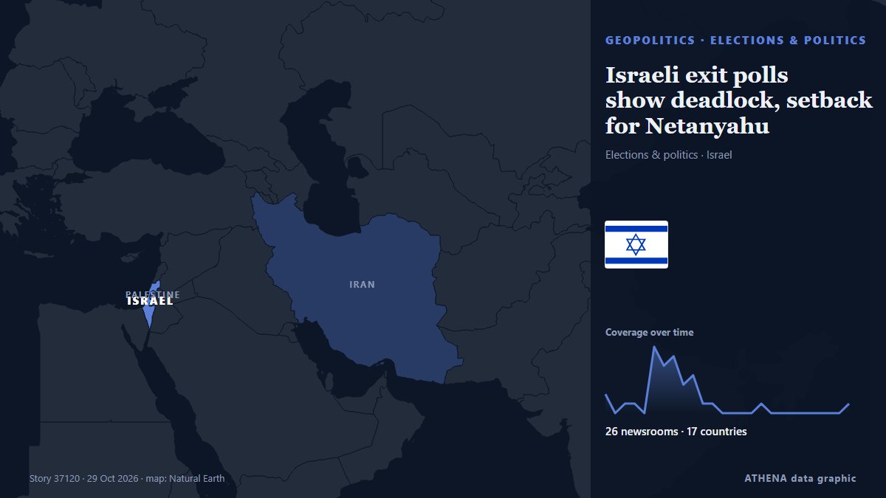

Israeli exit polls show deadlock, setback for Netanyahu

The vote drew a near-record turnout of 77.7 per cent, as Israelis passed wartime judgment on Prime Minister Benjamin Netanyahu in the first election since the Hamas-led attacks of Oct 7, 2023. von CNA (Channel NewsAsia)
Unabhängig gemeldet von 26 Medien in 17 Ländern seit dem 27. Okt., zuerst von TheJournal.ie; die Berichterstattung flaut ab. ATHENA stuft das Risiko als niedrig ein (1.5/10), vor allem wegen der Schwere des beschriebenen Schadens und seiner geografischen und sektoralen Reichweite. Die Konfidenz liegt bei 88 % (hoch): 26 Medien bestätigen es unabhängig, bei einer mittleren Verlässlichkeit der Quellen von 75 %.
Warum es wichtig ist: Sicherheits- und diplomatische Entwicklungen können Bündnisse, Handel und Märkte weit über die direkt beteiligten Länder hinaus verschieben.
Was sich geändert hat: 2 neue Berichte von 2 Redaktionen in den 24 Stunden bis 29. Okt..
Schlagzeilen werden auf Englisch angezeigt, wie veröffentlicht.
Auf einen Blick
Ausgewählt, bewertet und geschrieben nach der veröffentlichten Methodik von ATHENA. Kein Redakteur greift in einzelne Ereignisse ein. So entsteht ATHENA ›
| 27 Oct 08:45 UTC | 2 |
|---|---|
| 27 Oct 10:45 UTC | 0 |
| 27 Oct 12:45 UTC | 1 |
| 27 Oct 14:45 UTC | 1 |
| 27 Oct 16:45 UTC | 0 |
| 27 Oct 18:45 UTC | 7 |
| 27 Oct 20:45 UTC | 5 |
| 27 Oct 22:45 UTC | 6 |
| 28 Oct 00:45 UTC | 3 |
| 28 Oct 02:45 UTC | 4 |
| 28 Oct 04:45 UTC | 1 |
| 28 Oct 06:45 UTC | 1 |
| 28 Oct 08:45 UTC | 0 |
| 28 Oct 10:45 UTC | 0 |
| 28 Oct 12:45 UTC | 0 |
| 28 Oct 14:45 UTC | 0 |
| 28 Oct 16:45 UTC | 1 |
| 28 Oct 18:45 UTC | 0 |
| 28 Oct 20:45 UTC | 0 |
| 28 Oct 22:45 UTC | 0 |
| 29 Oct 00:45 UTC | 0 |
| 29 Oct 02:45 UTC | 0 |
| 29 Oct 04:45 UTC | 0 |
| 29 Oct 06:45 UTC | 0 |
| 29 Oct 08:45 UTC | 0 |
| 29 Oct 10:45 UTC | 1 |
| 27 Oct 08:55 UTC | 0.0 |
|---|---|
| 27 Oct 21:43 UTC | 2.1 |
| 29 Oct 10:50 UTC | 1.5 |
Warum diese Zahlen
Bedeutung
Risiko
Konfidenz
Die Berichterstattung – wer berichtete, und wann
Schlagzeile wie veröffentlicht · öffnet das Original- TheJournal.ie · Irland · IrelandThe 9 at 9: Tuesday
- Al Jazeera English · Katar · QatarIsrael election results 2026: When will we know who won and what’s next?
- Iran International (English) · IranIsraeli exit polls point to deadlock after Iran-dominated election
- The New Arab · INTIsrael exit polls show deadlock as Arab parties make history
- The Jerusalem Post · IsraelJPost’s Election Day LIVE: Watch exit polls, analyses, and election updates across Israel
- Al Jazeera English · Katar · QatarIsrael election results live: Netanyahu calls for a right-wing government
- Middle East Eye · INTIsrael’s election committee plans to announce official results by Wednesday evening
- Middle East Eye · INTIsraeli exit polls indicate deadlock in Tuesday's election
- The Independent · Vereinigtes Königreich · United KingdomIsrael election results live: Netanyahu faces calls to quit as exit polls point to deadlock with Eisenkot bloc
- The National · Vereinigte Arabische Emirate · United Arab EmiratesIsrael election live: Netanyahu's coalition ahead as change bloc urged to embrace Arab parties
- CNA (Channel NewsAsia) · Singapur · SingaporeIsraeli exit polls show deadlock, setback for Netanyahu
- The Straits Times · Singapur · SingaporeIsraeli exit polls show deadlock, setback for Netanyahu
- Business Recorder · PakistanIsraeli exit polls show election deadlock, no clear path to power
- Xinhua (English) — page reader · ChinaNetanyahu's rival Eisenkot says ready to form government as exit polls show Israeli election deadlock
- Rappler · Philippinen · PhilippinesIsraeli exit polls show deadlock, setback for Netanyahu
- Haaretz (English) · Israel2026 Israel election results: Live vote count
- The Business Times · Singapur · SingaporeIsraeli exit polls show deadlock, setback for Netanyahu
- The New Arab · INTIsrael's exit polls show deadlock: What happens next?
- The Korea Times · Südkorea · South KoreaIsraeli exit polls show deadlock, setback for Netanyahu
- CGTN (World) · ChinaEisenkot says ready to form government as exit polls show deadlock
- The Daily Star — page reader · Bangladesch · BangladeshIsraeli exit polls show deadlock in apparent setback for Netanyahu
- Al Jazeera English · Katar · QatarNetanyahu, Eisenkot camps clash over Israel election projections
- NDTV · Indien · IndiaIsrael Election Results Live: Arab Parties Emerge Kingmakers After Vote Counting In Israel: Local Media
- Oman Observer · OmanIsrael's elections: All eyes on what happens next?
- The Kathmandu Post · NepalIsraeli exit polls show deadlock, point to setback for Netanyahu
- Daily Maverick · Südafrika · South AfricaIsraeli exit polls show deadlock, point to setback for Netanyahu
- Cyprus Mail · Zypern · CyprusIsraeli exit polls show deadlock, point to setback for Netanyahu
- Times of India · Indien · IndiaNetanyahu vs Eisenkot: Israel exit polls point to a clash between PM, ex-army chief
- The Independent · Vereinigtes Königreich · United KingdomIsrael election results live: Trump suggests he could interfere in coalition talks as Arab bloc hits out at ‘racism’
- Cyprus Mail · Zypern · CyprusIsrael election deadlock leaves Netanyahu’s future uncertain
- IOL · Südafrika · South AfricaWho will govern Israel? Election deadlock leaves key questions unanswered
- Middle East Eye · INTIsrael’s election deadlock: What could happen next?
- The New Arab · INTIsrael election deadlock could shield Netanyahu from 7 Oct probe